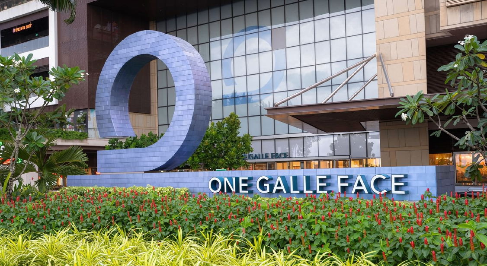

The ultimate lifestyle destination in Colombo, offering world-class shopping, dining, and residences overlooking the Indian Ocean.
One Galle Face is part of the Shangri-La development and is the largest shopping mall in Sri Lanka. It boasts 7 floors of international brands, a state-of-the-art cinema complex, and an expansive food court featuring cuisines from across the world.
Whether you're looking for high-end fashion, high-tech gadgets, or a rooftop drink with a view of the sunset, One Galle Face provides a modern contrast to the city's historical landmarks.
Back to Colombo Hub